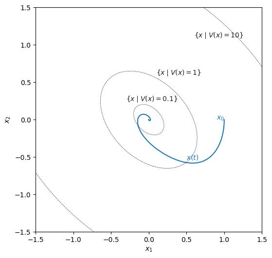

Bilinear SOS Problem
This example demonstrates how to find a polynomial Lyapunov function \(V(x)\) that certifies the stability of a nonlinear control system of the form:
$$ \dot x = f(x) + G(x) u(x) = \begin{bmatrix}x_2 + x_1^2 - x_1^3 \ 0\end{bmatrix} + \begin{bmatrix}0 \ 1\end{bmatrix} u(x), $$ where \(u(x)\) is a polynomial controller. The goal is to find a scalar, positive definite polynomial \(V(x)\) such that:
This condition is bilinear in the coefficients of \(V(x)\) and \(u(x)\), and therefore cannot be directly formulated as an SOS Problem. To address this, we fix the coefficients of \(u(x)\) using an initial guess, converting the problem into a linear SOS problem that can be solved efficiently.
To ensure feasibility, we restrict the analysis to an operating region defined by a ball of radius \(r\):
import matplotlib.pyplot as pyplot
import numpy.matlib
import numpy as np
from scipy.integrate import odeint
import polymat
import sosopt
from sosopt.polynomialconstraints.polynomialconstraint import PolynomialConstraint
context = sosopt.init_state()
# Define state variables
state_variables = tuple(polymat.define_variable(name) for name in ("x1", "x2"))
x1, x2 = state_variables
x = polymat.v_stack(state_variables)
# Define system dynamics
f = polymat.from_(
(
(x2 + x1**2 - x1**3,),
(0,),
)
)
G = polymat.from_(
(
(0,),
(1,),
)
)
# Define Lyapunov candidate V(x)
V_monom = x.combinations(degrees=(2,))
context, V = sosopt.define_polynomial(
name="V",
monomials=V_monom,
).apply(context)
dV = V.diff(x).T.cache()
# Define the polynomial controller u(x)
context, u = sosopt.define_polynomial(
name="u",
monomials=x.combinations(degrees=range(2)),
).apply(context)
x_dot = (f + G @ u).cache()
# Define constraints
constraints: list[PolynomialConstraint] = []
context, v_pos_condition = sosopt.sos_constraint(
name="V_pos",
greater_than_zero=V - 0.1 * x.T @ x,
).apply(context)
constraints.append(v_pos_condition)
# Control Lyapunov Function (CLF) condition
context, clf_condition = sosopt.quadratic_module_constraint(
name="clf",
greater_than_zero=-(dV.T @ x_dot) - 0.1 * x.T @ x,
domain=sosopt.set_(
smaller_than_zero={"w": x.T @ x - 4},
),
).apply(context)
constraints.append(clf_condition)
# Apply initial guess for u(x)
init_values = ((u, -x1 - x2),)
symbol_values = {}
for expr, value_expr in init_values:
if isinstance(value_expr, (float, int)):
value_expr = polymat.from_polynomial(value_expr)
context, result = sosopt.to_symbol_values(expr, value_expr).apply(context)
symbol_values |= result
# Define and solve SOS problem
sos_problem = sosopt.sos_problem(
lin_cost=sosopt.gram_matrix(V, x).trace(),
constraints=tuple(constraints),
solver=sosopt.cvxopt_solver,
)
sos_problem_eval = sos_problem.eval(symbol_values)
state, sos_result = sos_problem_eval.solve().apply(context)
symbol_values = symbol_values | sos_result.symbol_values
# Plotting setup
def map_to_xy(x, y):
return np.array((x, y)).reshape(-1, 1)
context, f_array = polymat.to_array(f, x).apply(context)
context, G_array = polymat.to_array(G, x).apply(context)
context, u_array = polymat.to_array(u.eval(symbol_values), x).apply(context)
context, V_array = polymat.to_array(V.eval(symbol_values), x).apply(context)
def get_x_dot(x, _):
x = np.array(x).reshape(-1, 1)
u = u_array(x)
xdot = f_array(x) + G_array(x) @ u
return np.squeeze(xdot)
x0 = [1, 0]
t_sim, dt_sim = 100, 100e-4
n_samples = int(t_sim / dt_sim)
t = np.linspace(0, t_sim, n_samples)
trajectory = odeint(get_x_dot, x0, t)
# Generate contour data
ticks = np.arange(-2.1, 2.1, 0.04)
X = np.matlib.repmat(ticks, len(ticks), 1)
Y = X.T
ZV = np.vectorize(lambda x, y: V_array(map_to_xy(x, y)))(X, Y)
# Plot results
pyplot.close()
fig = pyplot.figure(figsize=(6, 6))
ax = fig.subplots()
pyplot.plot(trajectory[:, 0], trajectory[:, 1], color="C0")
ax.contour(
X,
Y,
ZV,
[0.1, 1, 10, 100],
linewidths=0.5,
colors=["#17202A"],
linestyles=["dashed"],
)
# Annotations
ax.text(0.9, 0, r"$x_0$", color="C0")
ax.text(0.5, -0.53, r"$x(t)$", color="C0")
ax.text(-0.3, 0.25, r"$\{ x \mid V(x) = 0.1 \}$", color="#17202A")
ax.text(0.1, 0.6, r"$\{ x \mid V(x) = 1 \}$", color="#17202A")
ax.text(0.6, 1.1, r"$\{ x \mid V(x) = 10 \}$", color="#17202A")
ax.set_xlim(-1.5, 1.5)
ax.set_ylim(-1.5, 1.5)
ax.set_xlabel(r"$x_1$")
ax.set_ylabel(r"$x_2$")
pyplot.show()
This figure illustrates the contour of the resulting polynomial \(V(x)\):
